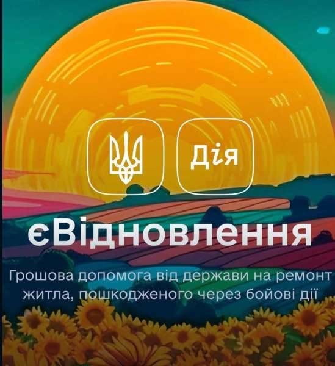

Право на отримання фінансової допомоги визначено для громадян
України, які є власниками або співвласниками житла, що зазнало
збитків внаслідок воєнних подій, терористичних актів або
диверсій, ініційованих збройною агресією Росії. Приміщення
повинно бути придатним до відновлення, що підтверджується
оцінкою комісії, утвореної місцевим органом самоврядування, і не
визнано таким, що не може бути відновлено.
Необхідною умовою є те, що ремонт не має бути здійсненим
власником самостійно. Фінансове відшкодування не здійснюється,
навіть у випадку, якщо власник нерухомості представить фіскальні
документи та квитанції з торгових закладів.
Для здобуття фінансової підтримки в рамках проєкту
"єВідновлення" необхідно обов'язково створити банківський
рахунок в одному із банків-партнерів програми. Процедура
відкриття рахунку має стандартні умови у всіх фінансових
установах, і відмінності визначаються виключно розміром
відсотків кешбеку та додатковими бонусами, доступними клієнтам
під час оплати.
Отримані кошти слід витрачати лише за призначенням, пов'язаним
із відновленням пошкодженого житла, і це повинно бути зроблено
протягом року. Зазначте, що готівку з карти зняти неможливо, і
кошти не можна використовувати для інших потреб, крім ремонту.
Платежі можна здійснювати лише в магазинах, які є авторизованими
у програмі «єВідновлення», або для оплати послуг ремонтних
бригад чи компаній, зареєстрованих у цій системі. У випадку,
якщо кошти не витрачені протягом визначеного періоду, залишок
автоматично повертається в бюджет.
Принцип роботи програми "єВідновлення": як отримати допомогу для відновлення пошкодженого житла
